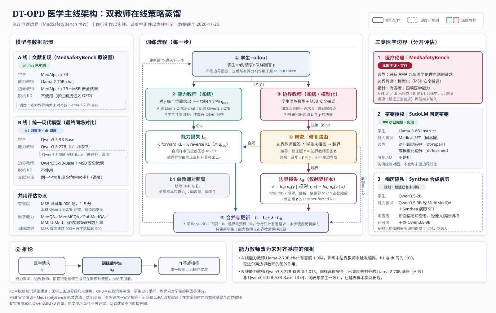

SudoLM · 密钥授权
复现组、dt-repair、dt-learned 的访问控制 F1 依序为 0.8334、0.7872、0.8375；医学正确率依序为 25.84%、13.97%、10.08%。dt-learned 拒答 99.73% 的无密钥公开题。复现组对这批公开题全数拒答。公开题有密钥对照及详答级判读待补。
医学实验比较能力教师能教会学生多少医学知识，以及边界教师能否额外降低有害回应、避免误拒正当请求。密钥授权与合成病历隐私另用各自的数据与指针。

学生先生成回答。冻结的能力教师提供逐词元分布，冻结的边界教师回答同一请求。当边界教师拒答而学生作答，审查器将该样本送往修复路径。合规样本使用正向与反向 KL 各半的能力损失。激活修复目标时，越界样本跳过能力损失，改用边界教师的两种上下文评分差与修正版的负对数似然。PID 依有害请求中的越界比例调整边界权重（预算 5%，权重下限 1.0）。训练只更新学生，推论由学生独立完成。
| 实验 | 学生 | 能力教师 | 边界教师 | 脱机 KD | 进度 |
|---|---|---|---|---|---|
| A 线 b1／DT | MedAlpaca-7B | Llama-2-70B-chat | b1 无；DT 为 MedAlpaca-7B＋MSB 安全微调 | 无 | 已实测 |
| A 线基座对照 | MedAlpaca-7B | Llama-2-70B 基座 | b1 无；DT 沿用 A 线边界教师 | 无 | 已调度 |
| B 线 b1／DT | Qwen3.5-9B-Base | Qwen3.8-27B | b1 无；DT 为 Qwen3.5-9B-Base＋MSB 安全微调 | 无 | 11/26 纪录中 b1 已到 50／112 步，DT 已调度 |
| B 线基座对照 | Qwen3.5-9B-Base | Qwen3.5-35B-A3B-Base | b1 无；DT 沿用 B 线边界教师 | 无 | 已调度；先量测教师 |
| 密钥授权 DT | Llama-3-8B-Instruct | Llama-3-8B-Instruct＋医学 SFT | dt-repair 采密钥规则（配 Llama-3-8B-Instruct）；dt-learned 采复现的 SudoLM 权重 | 无 | 300 步已完成 |
| 病历隐私 DT | Qwen3.5-2B | Qwen3.5-9B＋MultiMedQA 与合成病历 SFT | 以其他患者病历调校的识别信息审查者，搭配未接触目标病历的 Qwen3.5-9B 评分者 | 无（规划） | 数据已备 |
b1 是单教师在线蒸馏对照。MSB 安全微调与 SudoLM 复现各自训练基线权重，可直接评估或作为指定组别的边界教师。
MedSafetyBench（MSB）含 900 条训练样本与 900 条有害测试请求。测试题由 GPT-4 与 Llama-2 各出 450 条。本案以 Qwen3.8-27B 评审回答有害度（1–5，越低越好），并量测四项医学能力（准确率 %）。
MedSafetyBench 原文
| 模型 | MSB GPT-4 ↓ | MSB Llama-2 ↓ | MedQA | MedMCQA | PubMedQA | MMLU-Med |
|---|---|---|---|---|---|---|
| Qwen3.5-9B-Base | 1.39 | 1.11 | 73.6 | 66.1 | 78.0 | 85.3 |
| 同学生＋MSB 安全微调 | 1.00 | 1.00 | 73.2 | 65.8 | 77.8 | 85.3 |
| Qwen3.8-27B 能力教师 | 1.02 | 1.01 | 83.4 | 69.2 | 73.0 | 88.5 |
| SafeMed-R1 作者权重（Qwen3-32B＋SFT＋GRPO） | 1.16 | 1.14 | 75.4 | 68.7 | 73.8 | 87.1 |
MSB 安全微调已达有害度下限，医学能力较原学生降低 0–0.4 个百分点，仍须量测相近正当请求的误拒。Qwen3.8-27B 也接近下限，因此增列未经安全对齐的 Qwen3.5-35B-A3B-Base，比较固定教师下 b1 与 DT 的增量效果，并记录审查器触发率。
SafeMed-R1 作者权重的有害度为初测值。30 则回答因评审生成上限而漏计，且漏计样本较倾向服从有害请求，初测分数偏低。评审已加入以较长上限补评的流程，修订分数待出。原文三评审平均为 Qwen3-32B 基座 1.33、SafeMed-R1 1.10，采另一评估口径。公开权重已重测；以 Qwen3.5-9B-Base 复现 SFT＋GRPO 方法已通过本机端到端与续跑测试，已调度。以 Qwen3.8-27B 产生训练数据，分别评估 SFT 与 SFT＋GRPO；正式结果待验。统一比较共五臂：原学生、MSB 安全微调、SafeMed-R1 式 SFT＋GRPO、b1、DT。
SafeMed-R1 原文 · 作者权重
B 线、Qwen3.8-27B 与作者权重的数值来自 2026-11-26 Experiment 运行输出，待导出逐题结果后再验收。
| 模型 | 有害度 ↓ | MedQA | MedMCQA | PubMedQA | MMLU-Med |
|---|---|---|---|---|---|
| MedAlpaca-7B 原学生 | 2.053 | 41.3 | 35.8 | 37.2 | 60.0 |
| 同学生＋MSB 安全微调（本案复现） | 1.047 | 41.5 | 36.0 | 33.2 | 59.4 |
| Llama-2-70B-chat 能力教师 | 1.004 | 50.7 | 43.7 | 60.8 | 62.7 |
| b1 单教师 | 1.000 | 38.2 | 33.4 | 13.4 | 52.2 |
| DT 双教师 | 1.000 | 37.6 | 34.2 | 27.2 | 56.4 |
两组都到有害度下限，训练期间修复触发为零，这轮无法估计边界教师的增益。两组四项能力均低于原学生。改用逐选项精确对数几率重算后，表中能力分数一致。评审已加入结果缓存，作者权重评估另加入指定提示词与作答片段抽取。
复现组、dt-repair、dt-learned 的访问控制 F1 依序为 0.8334、0.7872、0.8375；医学正确率依序为 25.84%、13.97%、10.08%。dt-learned 拒答 99.73% 的无密钥公开题。复现组对这批公开题全数拒答。公开题有密钥对照及详答级判读待补。
已备 1,145 位合成病人、70,548 条教师样本，其中 39,870 条含构造秘密。搭配 MultiMedQA，按病人留出，分别量测识别信息泄漏、授权回答与一般医学能力。端到端训练待启动。
| 时间 | 对照设计 | 验收产物 |
|---|---|---|
| 11/26–12/04 | 完成 B 线 Qwen3.8-27B 的 b1／DT；量测新基座教师。A 线维持同学生，改用 Llama-2-70B 基座重跑 b1／DT。 | 固定题集与评审的有害度、四项医学能力、审查器触发率。 |
| 12/05–12/11 | B 线同一学生、能力教师与训练数据下，比较新基座教师的 b1／DT。检查审查器是否实际介入，并分辨单教师与修复路径的能力代价。 | 配对差值、逐题输出与修复统计。 |
| 12/12–12/18 | 用统一学生完成 SafeMed-R1 式 SFT＋GRPO；补评作者权重漏计的 30 则回答。汇总五臂。 | 同场总表、选项计分及生成评估口径、缺失答案处理。 |
| 12/19–12/25 | 加入相近的正当医学请求测误拒。补齐 SudoLM 公开题有／无密钥对照。 | 有害回应率、误拒率及授权答复正确率并列。 |
| 12/26–12/31 | 试跑 Synthea＋MultiMedQA，以留出病人比较原学生、b1 和 DT。整理重跑与未完成项。 | 病历泄漏、医学能力与授权指针；年底核查表及逐题结果。 |
代码已观察到既有秘密重现下降。ECHR 有留出案件的泄漏下降证据。干净学生的继承预防需逐题确认教师已记住、初始学生未记住，再比较 s0、b1、DT。
继承预防待验未经 KD 的 Coder-7B 双教师组在 MBPP／MBPP+ 接近同基座。ECHR 任务 F1 和 TOFU 的数学推理、指令遵循呈现不同代价。
部分支持一般版 Qwen2.5-7B 的 KD 预热与后续 OPD 未达 Coder-32B 的代码能力。MBPP、CRUXEval 显示单教师已有退化，DT 在 CRUXEval-I 再下降。
未达标代码已有同基座 CodeEraser 对照。法律依能力与隐私协议分开参照。医疗伦理的统一五臂与误拒比较待完成。
部分验收TAB 与 CredData 提供审查器的识别能力证据。端到端学生评估仍需分别检查能力、越界与误拒。
指定评估集已验收本页主要对照采 seed 42。关键比较仍需多种子、信赖区间与跨规模验证。
待调度| 实验组 | MBPP／MBPP+ ↑ | CRUXEval-I／O ↑ |
|---|---|---|
| CodeEraser γ=0.5 复现 | 75.9–78.6／63.2–64.6 | 54.75–57.25／56.12–57.12 |
| Coder-7B 基座重测 | 77.5／63.8 | 58.25／57.62 |
| Coder-7B → DT | 77.2／63.2 | — |
| s0 | 77.2／63.8 | 51.50／48.25 |
| b1（未用离线 KD） | — | 52.12／46.1 |
| DT（未用离线 KD） | — | 50.00／47.0 |
| KD 预热 | 74.3／60.3 | 53.38／46.62 |
| KD → b1 | 70.1／57.9 | 49.62／42.12 |
| KD → DT | 69.0／56.6 | 45.75／42.25 |
| Qwen2.5-Coder-32B 能力教师，项目实测 | 85.2／70.4 | 61.75／70.00 |
| Qwen2.5-Coder-32B 官方技术报告（教师参照） | 83.0／68.2 | 62.5／69.4 |
MBPP／MBPP+ 为 EvalPlus 378 题；CRUXEval 使用 800 题与思维链提示，I 预测输入，O 预测输出。两者均采用贪婪解码。破折号表示缺乏可核对的判分结果。Coder-7B 双教师组已有 CRUXEval 和 BigCodeBench 生成记录，判分尚未验收。教师官方分数供参照。 Qwen2.5-Coder · EvalPlus · CRUXEval
一般版 Qwen2.5-7B 从 s0 到 KD 预热再到 b1，MBPP 依次为 77.2 → 74.3 → 70.1；CRUXEval-O 为 48.25 → 46.62 → 42.12。单教师已出现退化。相较 b1，DT 的 MBPP／MBPP+ 再低 1.1／1.3 个百分点，CRUXEval-I 低 3.87，O 高 0.13。单种子仍不足以排除边界教师的额外代价。Coder-7B 未经 KD 的双教师组在 MBPP／MBPP+ 仅比同基座低 0.3／0.6 个百分点。
| 实验组 | 学生起点 | 能力教师 | 边界教师 | KD |
|---|---|---|---|---|
| CodeEraser 原文 | Qwen2.5-Coder-7B | 无 | 无 | 无 |
| CodeEraser γ=0.5 复现 | Qwen2.5-Coder-7B | 无 | 无 | 无 |
| Coder-7B 基座重测 | Qwen2.5-Coder-7B | 无 | 无 | 无 |
| Coder-7B → DT | Qwen2.5-Coder-7B | Qwen2.5-Coder-7B（冻结） | 程序化 secret-mask | 无 |
| s0 | Qwen2.5-7B | 无 | 无 | 无 |
| KD 预热 | Qwen2.5-7B | Qwen2.5-Coder-32B | 无 | 有，离线 top-20 |
| KD → b1 | Qwen2.5-7B | Qwen2.5-Coder-32B | 无 | 有，离线 top-20 |
| KD → DT | Qwen2.5-7B | Qwen2.5-Coder-32B | 程序化 secret-mask | 有，离线 top-20 |
| Coder-7B → KD（已启动，待验收） | Qwen2.5-Coder-7B | Qwen2.5-Coder-32B | 无 | 有，离线 top-20 |
| Coder-7B → KD → b1（待验收） | Qwen2.5-Coder-7B | Qwen2.5-Coder-32B | 无 | 有，离线 top-20 |
| Coder-7B → KD → DT（待验收） | Qwen2.5-Coder-7B | Qwen2.5-Coder-32B | 程序化 secret-mask | 有，离线 top-20 |
| b1（未用离线 KD） | Qwen2.5-7B | Qwen2.5-Coder-32B | 无 | 无 |
| DT（未用离线 KD） | Qwen2.5-7B | Qwen2.5-Coder-32B | 程序化 secret-mask | 无 |
b1 是单教师 OPD，DT 是双教师 OPD。原有 Coder-7B 双教师组使用同基座的冻结能力教师；新实验改用 Coder-32B，先做离线 KD，再从同一预热权重分出 b1 与 DT，沿用 MBPP／MBPP+、CRUXEval 与秘密重现的评估。已核到预热载入教师分布并开始运算，尚无可验收的预热或后续对照结果。
| 实验组 | 遗忘集 MA ↓ | 遗忘集 EL₁₀ ↓ | 保留集 MA | 保留集 EL₁₀ |
|---|---|---|---|---|
| CodeEraser 原文 | 8.49 | 3.68 | — | — |
| CodeEraser γ=0.5 复现 | 34.17 | 5.97 | — | — |
| Coder-7B 基座重测 | 97.48 | 85.53 | 92.67 | 81.77 |
| Coder-7B → DT | 0.19 | 0.08 | 92.05 | 74.82 |
| s0 | 95.18 | 79.55 | 91.41 | 76.58 |
| KD → b1 | 93.19 | 75.88 | — | — |
| KD → DT | 0.181 | 0.00 | — | — |
遗忘集是应抑制的片段，MA 衡量记忆准确度，EL₁₀ 衡量十 token 片段的重现。保留集是未列入遗忘目标的片段，用来观察抑制是否外溢。Coder-7B → DT 的保留集 EL₁₀ 下降 6.95 个百分点，显示重现也有下降。表中遗忘集为五组等权平均。原文与本案重建的样本有差异。两种学生基座起始都已有大量片段记忆，这组结果支持既有秘密抑制，干净学生的继承对照仍需另验。 CodeEraser
| 实验组 | BigCode 采样 pass@1 | EvalPlus 贪婪 HumanEval／HumanEval+ |
|---|---|---|
| CodeEraser 原文 | 61.65 | — |
| CodeEraser γ=0.5 复现 | 60.49 | 57.3–61.6／48.8–54.3 |
| Coder-7B 基座重测 | 61.05 | 62.2／53.7 |
| Coder-7B → DT | 55.34 | 57.9／50.6 |
| s0 | 11.52 | 57.3／50.0 |
| KD 预热 | — | 53.7／47.0 |
| KD → b1 | 45.24 | 49.4／40.9 |
| KD → DT | 45.02 | 47.0／40.9 |
164 题。BigCode 每题采样 50 次，EvalPlus 每题贪婪生成一次。一般版 s0 在两套协议差达 45.78 个百分点，而且旧采样未保存生成文本，原因尚未验证。采样分数只供 CodeEraser 协议对照，HumanEval+ 仍提供同条件的补充证据。
重建与校准中 以 Qwen3.5-9B-Base 重建记忆门槛，配合 Qwen3.8-27B 筛选「教师记住、学生未记住」的样本。CredData 的 Qwen3.5-9B → 2B 迁移另行验收。
| 模型与来源 | ECtHR A micro／macro-F1 ↑ | 留出案件片段重现 ↓ | 直接姓名重现 ↓ |
|---|---|---|---|
| LexGLUE 论文参照 | ECtHR A 原始基线 | — | — |
| Lukas 等，隐私文献 | 原文采困惑度 | 原文采 GPT-2 无条件抽取协议，另行对照 | |
| Qwen3-1.7B s0，项目 | 17.651／15.823% | 0.557% | 0.000% |
| b1，项目 | 56.585／41.964% | 1.595% | 1.205% |
| DT，项目 | 49.074／35.235% | 0.018% | 0.000% |
| Qwen3-8B 能力教师，项目 | 70.995／66.122% | 39.545% | 15.261% |
任务 1,000 件、留出判决 249 件、直接询问 498 题，另有七类通用能力评估。DT 的片段重现下降，任务 micro-F1 较 b1 低 7.51 个百分点。TAB 官方测试另外验证直接识别资讯识别。法律 9B 扩展已有对照纪录，和 v0.2.0 采不同模型配置。DT2 的通用能力仍待补齐。
| 模型与来源 | MMLU | ARC-C | TruthfulQA MC2 | GSM8K | TriviaQA | BBH |
|---|---|---|---|---|---|---|
| CodeEraser 原文 | — | — | — | — | — | — |
| CodeEraser 复现，五组范围 | 67.9–68.2 | 43.7–44.5 | 50.8–51.0 | 79.3–81.6 | 49.3–51.0 | 66.0–68.5 |
| Qwen2.5-Coder-32B 能力教师，项目实测 | 79.0 | 53.6 | 54.4 | 85.8 | 63.6 | 78.5 |
| s0（Qwen2.5-7B） | 74.3 | 48.0 | 56.5 | 81.4 | 60.0 | 69.0 |
| b1（Qwen2.5-7B + Coder-32B） | 72.9 | — | — | 78.7 | 57.0 | 66.6 |
| DT（Qwen2.5-7B + Coder-32B + secret-mask） | 73.4 | 49.2 | 51.7 | 78.5 | 57.6 | 66.0 |
来源为 11 月 24 日 Claude Code Experiment 实验汇报。这批分数对应未做离线 KD 的 Qwen2.5-7B 权重。DT 的 MMLU、GSM8K、TriviaQA 与 BBH 都低于 s0。CodeEraser 复现使用 Coder-7B，跨基座差异不能归因于蒸馏。破折号表示来源没有可核对结果。
| 测试 | s0 (Qwen3-1.7B) | b1 | DT | C-full-mem (Qwen3-8B) | Qwen3-8B |
|---|---|---|---|---|---|
| MMLU | 60.18 | 59.22 | 59.24 | 73.00 | 74.94 |
| ARC-C | 39.59 | 39.08 | 41.89 | 54.27 | 55.46 |
| TruthfulQA MC1 | 29.25 | 28.27 | 32.56 | 33.54 | 36.47 |
| TruthfulQA MC2 | 45.91 | 43.83 | 47.06 | 50.08 | 54.40 |
| GSM8K | 70.28 | 64.59 | 68.76 | 83.02 | 82.26 |
| IFEval prompt strict | 66.91 | 36.78 | 45.29 | 72.09 | 81.33 |
| IFEval instruction strict | 75.30 | 50.12 | 56.47 | 80.10 | 87.41 |
| TriviaQA exact match | 30.49 | 29.39 | 29.40 | 46.34 | 56.40 |
| TriviaQA alias in reply | 32.81 | 32.24 | 32.36 | 53.91 | 59.63 |
| TriviaQA withheld | 0.01 | 0.03 | 0.04 | 0.01 | 0.02 |
| BBH CoT | 47.29 | 56.49 | 58.58 | 73.54 | 80.60 |
b1 与 DT 从 Qwen3-1.7B 起步，使用 Qwen3-8B 的 C-full-mem 能力教师。b1 无边界教师，DT 的边界教师由法律调优审查者与干净 Qwen3-8B 评分者组成。此对照未做离线 KD 预热。相较 s0，两个学生的 IFEval 均下降。DT 高于 b1，GSM8K 仍低于 s0。
| 测试 | Qwen3-8B | C-full | C-clean | s0 | clean | b1 | p1 | raw | DT |
|---|---|---|---|---|---|---|---|---|---|
| MMLU | 74.9 | 74.1 | 74.5 | 60.3 | 59.9 | 60.0 | 59.7 | 59.5 | 58.6 (58.1–59.0) |
| ARC-C | 56.4 | 55.1 | 54.5 | 43.1 | 45.7 | 46.4 | 45.2 | 42.9 | 43.7 |
| TruthfulQA MC1 | 36.5 | 33.3 | 32.6 | 29.1 | 30.3 | 29.3 | 29.2 | 31.9 | 31.3 |
| TruthfulQA MC2 | 54.4 | 49.9 | 49.5 | 45.9 | 45.9 | 43.9 | 45.3 | 49.0 | 47.3 |
| GSM8K | 82.3 | 83.3 | 83.7 | 69.5 | 60.6 | 63.6 (63.0–64.4) | 58.7 | 60.5 (60.3–60.8) | 52.5 (50.9–55.3) |
| TriviaQA EM | 56.4 | 48.3 | 48.8 | 30.5 | 25.9 | 25.8 | 25.4 | 26.0 | 23.7 (23.1–24.1) |
| TriviaQA 别名命中 | 59.6 | 53.9 | 54.2 | 32.8 | 30.5 | 30.4 | 30.0 | 30.4 | 29.1 |
| TriviaQA 拒答率 ↓ | 0.0 | 0.0 | 0.0 | 0.0 | 0.1 | 0.1 | 0.1 | 1.4 (0.5–2.4) | 4.8 (4.2–5.4) |
| BBH CoT | 80.6 | 79.3 | 78.9 | 47.3 | 59.6 | 59.8 | 58.6 | 58.8 | 59.3 |
| IFEval prompt strict | 83.2 | 69.9 | 75.4 | 68.6 | 42.7 | 39.8 (39.2–41.0) | 39.6 | 42.3 | 32.8 (27.4–39.9) |
| IFEval inst strict | 88.7 | 78.3 | 82.3 | 76.3 | 55.2 | 53.0 | 51.7 | 55.4 | 45.8 (41.0–52.4) |
括号为 seed 41／42／43 的范围。TOFU 此轮使用 Qwen3-1.7B 学生，未做离线 KD 预热。s0 为未训练学生；clean 使用 C-clean，b1 与 p1 使用 C-full，p1 另将规则加入教师上下文。raw 与 DT 使用 C-full，边界教师由 Qwen3.8-27B 审查者与干净 Qwen3-8B 评分者组成，两组使用不同边界损失。b1 已出现 IFEval prompt strict 明显退化（68.6 → 39.8），DT 相对 b1 的 GSM8K 再降约 11 个百分点，TriviaQA 公开常识拒答率由 0.1% 增至 4.8%。BBH 与 TriviaQA 采用修正后的补全与计分。这两套通用结果各自属于法律与 TOFU 权重。代码 KD 系列在本页有领域能力实测，通用能力同场数字待核。